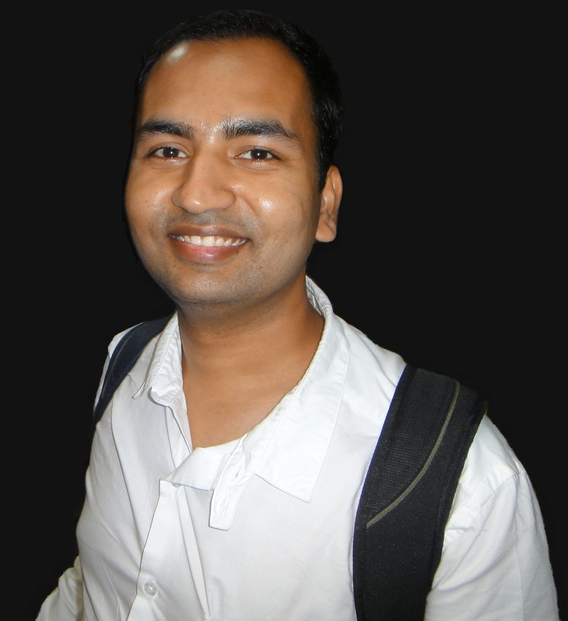

Priyesh Kumar
founder
Priyesh sir is a technology enthusiast at his core. He is known for architecting, designing and developing large scale applications, and ensure security, scalability, and maintainability.

Tanvi Kaushik
co-founder
Tanwi mam is a social entrepreneur and researcher. She is a double masters in Life Sciences from Cornell University (USA) and NUS (Singapore) with 6 years of experience in research and development.

Jasjit Singh
advisor
Jasjit Singh sir has been an INSEAD professor since 2004. His interests include Strategy, Inclusive Business, Sustainable Development, Innovation, Impact Investing and Impact Evaluation.